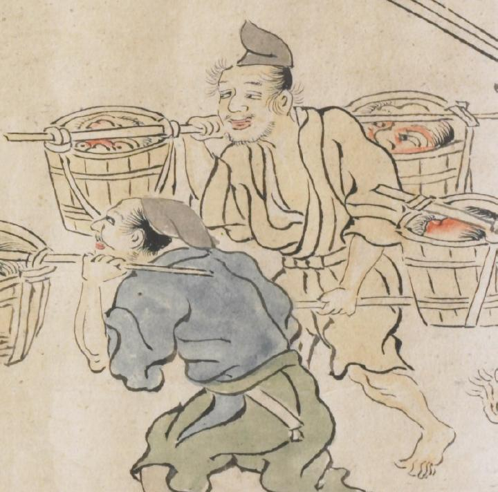

人間が担ぐ盥のなかに鬼の首が入っている。赤い顔をしており、まるで生きているかのように目を大きく見ひらいている。
出典：親書誌：U426_nichibunken_0079：酒天童子絵巻；シュテンドウジエマキ／日付：2006／資源識別子：U426_nichibunken_0079_0016_0000
Copyright (c)2010- International Research Center for Japanese Studies, Kyoto, Japan. All rights reserved.